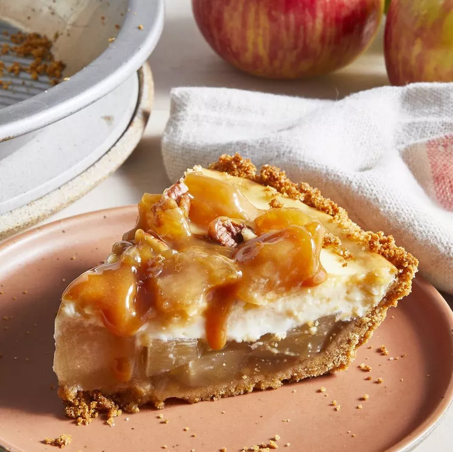

Carmel Apple Cheesecake

Description
Caramel apple meets cheesecake in this deliciously easy fall dessert that layers apple pie filling with cream
cheese and caramel sauce to make a glorious filling for a graham cracker crust!
Great recipe, very simple and easy to make. The instructions are well done. I did my own base instead of a
pre-made crust. I also used brown sugar when mixing the graham crackers for the base. Extremely tasty and I
would make it again everyone loved it.
Ingridents
- 1 (21 ounce) can apple pie filling
- 1 (9 inch) prepared graham cracker crust
- 2 (8 ounce) packages cream cheese, softened
- ½ cup white sugar
- ¼ teaspoon vanilla extract
- 2 large eggs
- ¼ cup caramel sauce
- 12 pecan halves
- ⅔ cup chopped pecans
Steps
- Preheat the oven to 350 degrees F (175 degrees C).
- Reserve 3/4 cup of apple pie filling and set aside. Spoon remaining pie filling into crust.
- Combine cream cheese, sugar, and vanilla in a large bowl; beat until smooth. Add eggs and mix well; pour
over apple filling in crust.
- Bake in the preheated oven until edges are puffed and surface of cheesecake is firm except for a small spot
in the center that will jiggle when the pan is gently shaken, about 35 minutes. Remove from oven and cool to
room temperature.
- To make the caramel apple topping: Mix reserved apple filling and caramel sauce in a small saucepan over
medium-low heat until warmed through, about 1 minute.
- Arrange apple slices around outside edge of cooled cheesecake. Spread caramel sauce evenly on top; decorate
with pecan halves around edge. Sprinkle with chopped pecans. Chill until ready to serve.